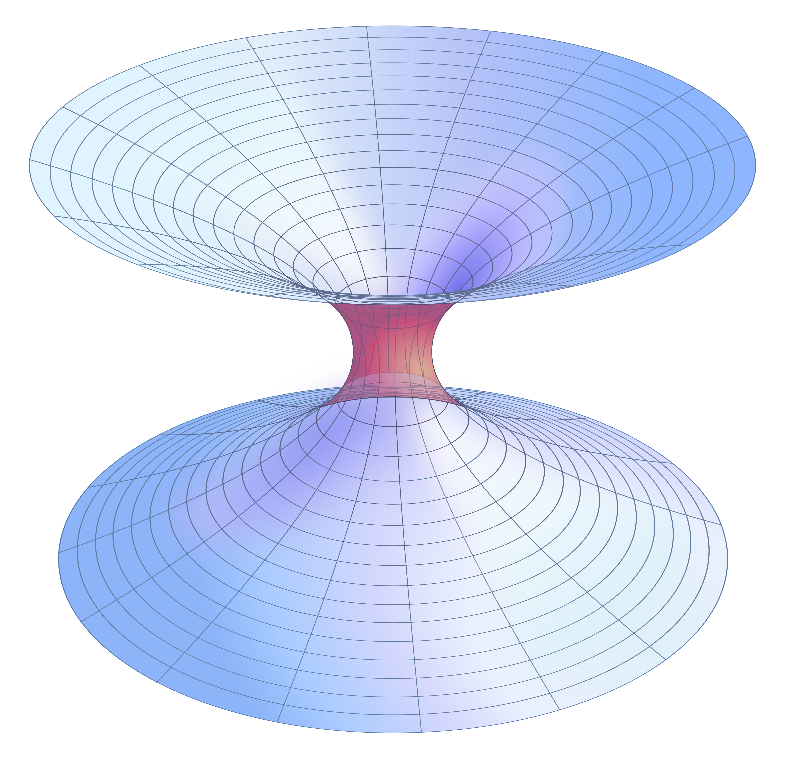

Записуємо загальний вигляд
\(y=ax^2+bx+c\)
Оскільки парабола симетрична відносно осі \(Oy\), коефіцієнт \(b=0\). Вершина має координати \((0;3)\), тому \(c=3\).
НАВЧАЛЬНИЙ ПРОЄКТ · АЛГЕБРА
Як за допомогою квадратичної функції описати форму умовного входу?
Дослідити проєкт ↘ЩО ЦЕ ТАКЕ?
Кротовина — це гіпотетичний тунель у просторі-часі, який теоретично міг би з’єднувати дві віддалені області Всесвіту.
Уявімо аркуш паперу: якщо зігнути його, дві далекі точки опиняться поруч. Ця аналогія допомагає уявити ідею короткого шляху крізь простір.
Існування прохідних кротовин не підтверджене спостереженнями. У цьому проєкті ми створюємо навчальну математичну модель, а не точний фізичний опис такого об’єкта.

СХЕМАТИЧНА ІЛЮСТРАЦІЯ КРОТОВИНИКОСМОС У КІНО
У фільмі «Інтерстеллар» кротовина стає способом подорожувати між віддаленими областями космосу. Кіно допомагає візуалізувати складну наукову ідею.
ВІД ІДЕЇ ДО ОБЧИСЛЕНЬ
Уявімо, що потрібно спроєктувати умовний симетричний вхід у тунель у формі параболічної арки. Ширина входу — 4 м, а висота — 3 м. Потрібно скласти формулу параболи та знайти висоту арки на відстані 1 м від її центру.
Це умовна геометрична задача. Парабола використовується як зручна модель арки, а не як доведена форма справжньої кротовини.
Скласти рівняння параболи та визначити висоту арки на відстані 1 м від центру.
КРОК ЗА КРОКОМ
Оскільки парабола симетрична відносно осі \(Oy\), коефіцієнт \(b=0\). Вершина має координати \((0;3)\), тому \(c=3\).
Ширина входу — 4 м, тому від центра до кожного краю — 2 м. Точки перетину з віссю \(Ox\): \((-2;0)\) та \((2;0)\). Підставимо точку \((2;0)\).
Це шукане рівняння параболи для заданих параметрів.
Підставимо \(x=1\) у знайдену функцію:
Відповідь: 2,25 м.
ПОДИВІМОСЯ НА ГРАФІК
Парабола проходить через точки \((-2;0)\), \((0;3)\) та \((2;0)\). На графіку також позначено точку \((1;2,25)\), яку ми отримали під час розв’язання задачі.
ЩО МИ ДІЗНАЛИСЯ?
За допомогою квадратичної функції ми побудували модель параболічної арки з шириною 4 метри та висотою 3 метри.
Отже, квадратична функція допомогла розв’язати задачу та перевірити результат за допомогою графіка. Це приклад застосування алгебри для створення математичних моделей.